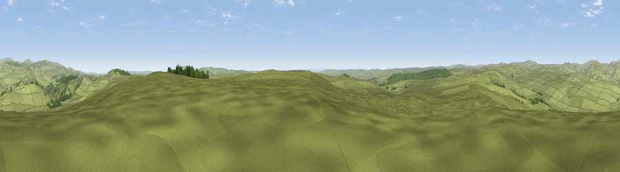

Viewpoint c12037_7784
#7378 in England · top 22% of its area beats it · —Where it is
The exact computed spot (NT 89225 01862). Click the marker for map links.
The view, rendered

A 360° render of this exact spot computed from the terrain model, tree cover and land cover — summer colours, afternoon light, calibrated against photographs of famous viewpoints. Real trees, hedges and buildings will differ in detail.
The panorama
Grey silhouette: terrain skyline in each direction (720 bearings, Earth curvature and refraction included). Dashed green: skyline with trees (+15 m) and buildings (+8 m) as obstacles. Blue strip: how far the ground is visible on each bearing.
Where the view opens
Wedge length = distance to the farthest visible ground on that bearing (vegetation-aware). Rings at 10, 25 and 50 km.
What fills the view
95% grassland · 5% woodland
Angular shares of the visible panorama (visual magnitude), not map area. Landscape diversity 0.09 (0–1 Shannon).
Key numbers
More beautiful places nearby
The staircase of upgrades: each row has a higher view potential than everything closer. Driving times are estimates from straight-line distance, calibrated against real road routing — check an actual route before setting out.
| Place | Direction | Drive | Score |
|---|---|---|---|
| Cold Law | ENE · 3 km | ~8 min | 76.1 |
| Viewpoint near Netherton | NE · 10 km | ~19 min | 76.5 |
| Thirl Moor | NW · 11 km | ~21 min | 77.2 |
| Wether Cairn [Wholhope Hill] | NNE · 11 km | ~21 min | 80.7 |
| Viewpoint c12273_7856 | NNE · 12 km | ~23 min | 83.7 |
| Viewpoint c12396_7887 | NNE · 19 km | ~32 min | 85.7 |
| Viewpoint near Kirknewton | N · 28 km | ~44 min | 86.1 |
| Viewpoint near Chillingham | NE · 30 km | ~47 min | 88.1 |
55.31073, -2.17130 · source: screening · position refined by local search. Computed location — check access rights before visiting.